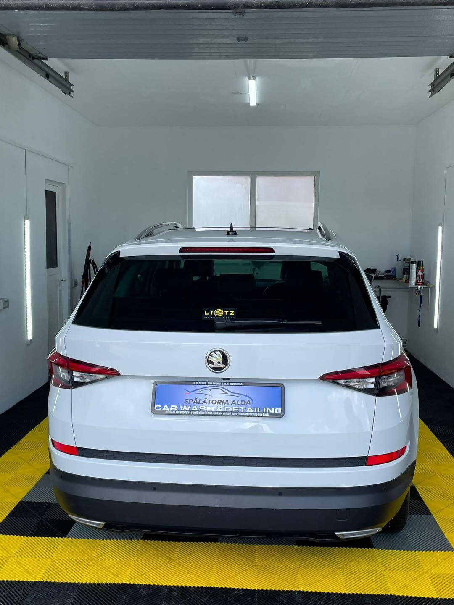
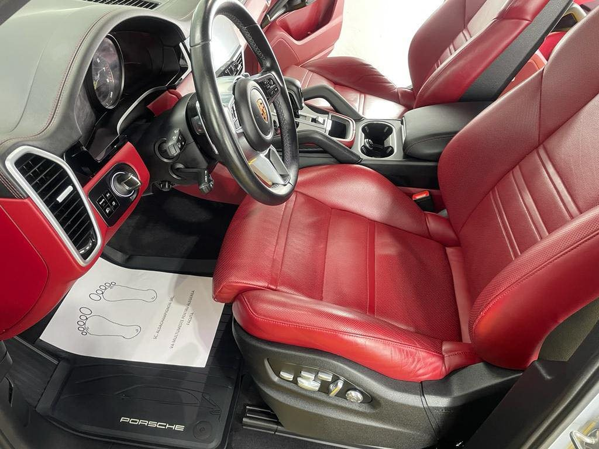
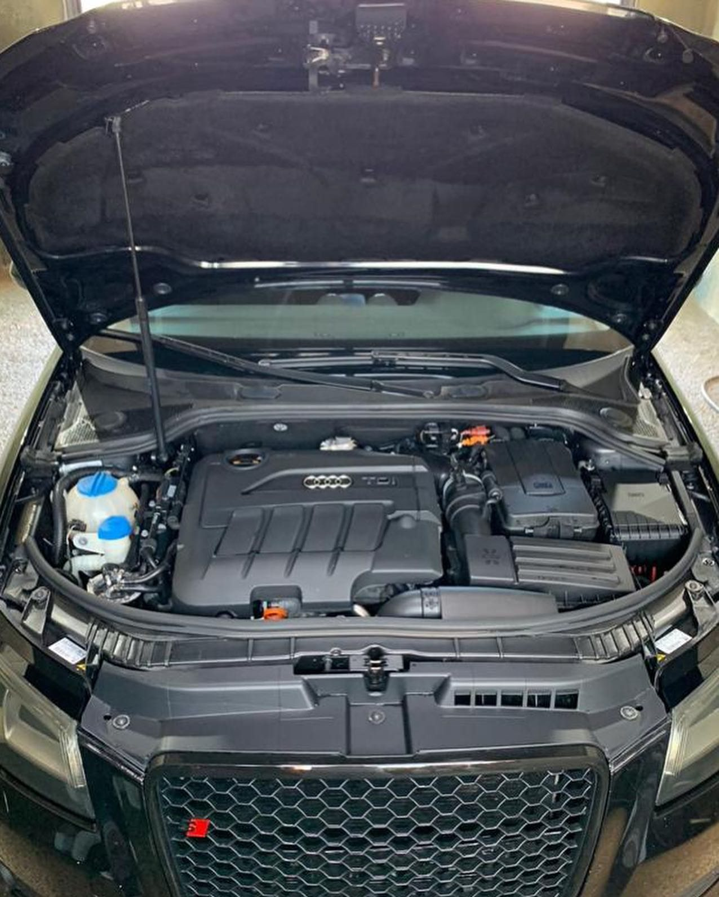
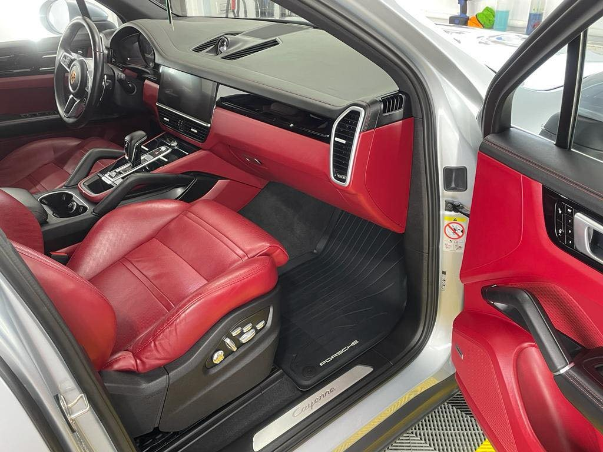
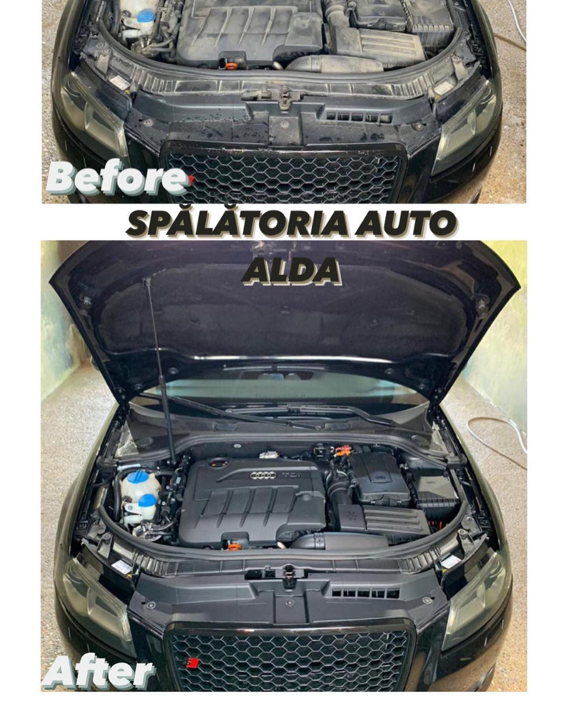
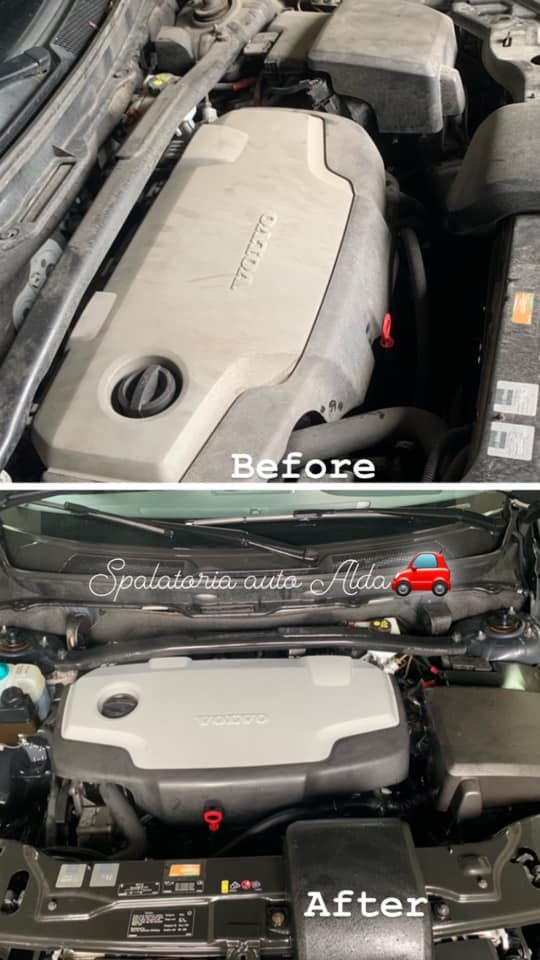
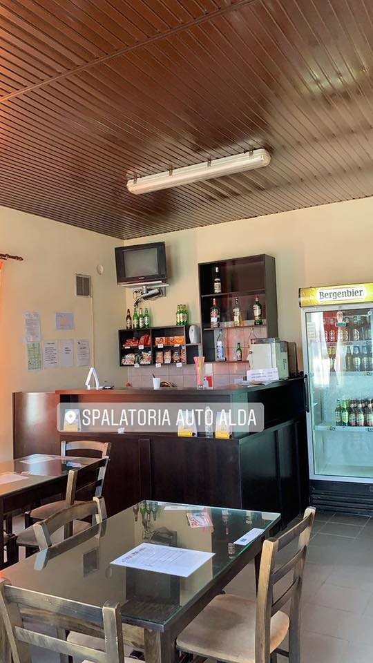
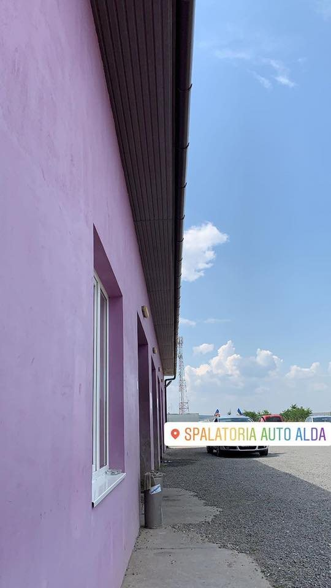

Spălare exterior
Spumă activă, spălare atentă la caroserie, jante și anvelope. Mașina iese lună, din față până în spate.
de la20 lei Cel mai cerutCosmetizare profesională AUTO și TIR pe Strada Lupului 39, în Zalău — spălare interior și exterior, spălare motor, tapițerie și covoare. De la citadine până la camioane și autocare, cu un bar unde aștepți la o cafea.
Cine suntem
La Spălătoria Auto Alda facem cosmetizare profesională AUTO și TIR pe Strada Lupului nr. 39, în Zalău. De la mașini de oraș și SUV-uri, până la camioane, cap-uri de TIR, autocare și platforme — avem tarif și pentru fiecare.
Lucrăm în hale acoperite, cu iluminat bun și pardoseală de detailing: spălare exterioară cu spumă, curățenie interior, spălare motor, curățare tapițerie și spălat covoare și mochete la un preț avantajos. Rezultatul îl vezi în galeria noastră.
„Cât se ocupă operatorii de mașina ta, tu te bucuri de o cafea la bar.”

Servicii
De la o spălare rapidă până la detailing complet interior-exterior, motor și tapițerie — pentru autoturisme, SUV-uri și vehicule mari.
Spumă activă, spălare atentă la caroserie, jante și anvelope. Mașina iese lună, din față până în spate.
de la20 lei Cel mai cerutAspirare, ștergere bord și plastice, geamuri curate. Interiorul revine primenit, cât aștepți la bar.
de la20 leiCompartimentul motor curățat cu grijă — se vede diferența, ca în fotografiile noastre înainte/după.
de la20 leiCurățăm scaune, uși, plafon și mochetele din interior — piele sau textil, redate ca noi.
Preț pe bucatăSpălat covoare și mochete de casă la un preț foarte avantajos, pe metru pătrat.
10 lei / m²Camionete, camioane 10 tone, cap-uri de TIR, autocare, semiremorci și platforme — tarife clare pentru fiecare.
Vehicule mari💜 Spălătoria Auto Alda, Strada Lupului 39, Zalău. Tarifele complete pe categorii de vehicule le găsești mai jos. Pentru detalii și disponibilitate, sună la 0741 265 064.
Tarife
Prețuri în lei (RON), pentru fiecare tip de serviciu. Tarifele de tapițerie sunt pe bucată: scaun, ușă și plafon/mochetă.
| Categorie | Jet | Exterior | Interior | Motor |
|---|---|---|---|---|
| Autoturism | 13 | 20 | 20 | 20 |
| SUV | 15 | 22 | 22 | 20 |
| Microbus 8+1 locuri | 15 | 23 | 23 | 20 |
| Microbus 16 locuri | 16 | 25 | 25 | 20 |
| Microbus 20 locuri | 19 | 29 | 29 | 22 |
| Camionete 3.5 tone | 24 | 41 | 24 | 29 |
| Camionete duble 7.5 to | 28 | 46 | 24 | 29 |
| Camion 10 tone | 30 | 51 | 24 | 36 |
| Cap TIR | 25 | 41 | 24 | 36 |
| Camion TIR | 46 | 82 | 24 | 36 |
| Autocar | 31 | 51 | 51 | 36 |
| Semiremorcă | — | 52 | — | — |
| Platformă mare | 19 | 32 | — | — |
| Platformă mică | 14 | 24 | — | — |
| Covoare / mochete | 10 lei / m² | |||
Tapițerie (pe bucată): scaun 16 lei · ușă 12 lei · plafon/mochetă de la 32 lei — variază în funcție de categoria vehiculului.
Tarife în RON, conform listei afișate la spălătorie. Prețurile pot suferi modificări; sună pentru confirmare.
Cum decurge
Ne găsești pe Strada Lupului 39, în Zalău. Sună înainte dacă vrei să prinzi un loc mai repede.
Exterior, interior, motor sau pachet complet — îți spunem pe loc tariful pentru mașina ta.
Operatorii se ocupă de mașină, iar tu te bucuri de o cafea, un ceai sau o răcoritoare.
Mașina iese curată, gata de drum. Simplu, rapid, fără complicații.
Galerie
Fotografii reale de la spălătorie. Mai multe pe pagina noastră de Facebook.







Contact & Locație